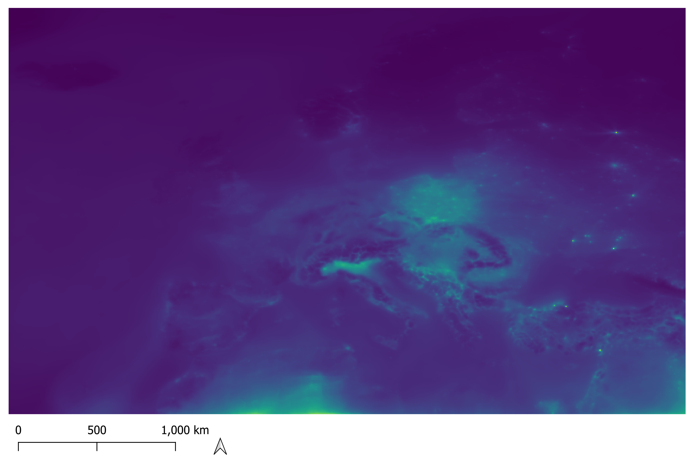
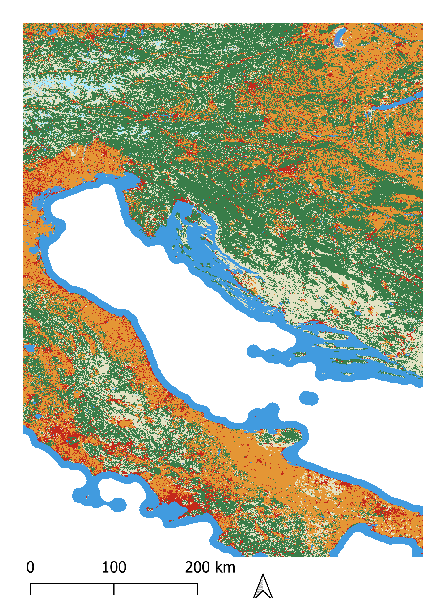
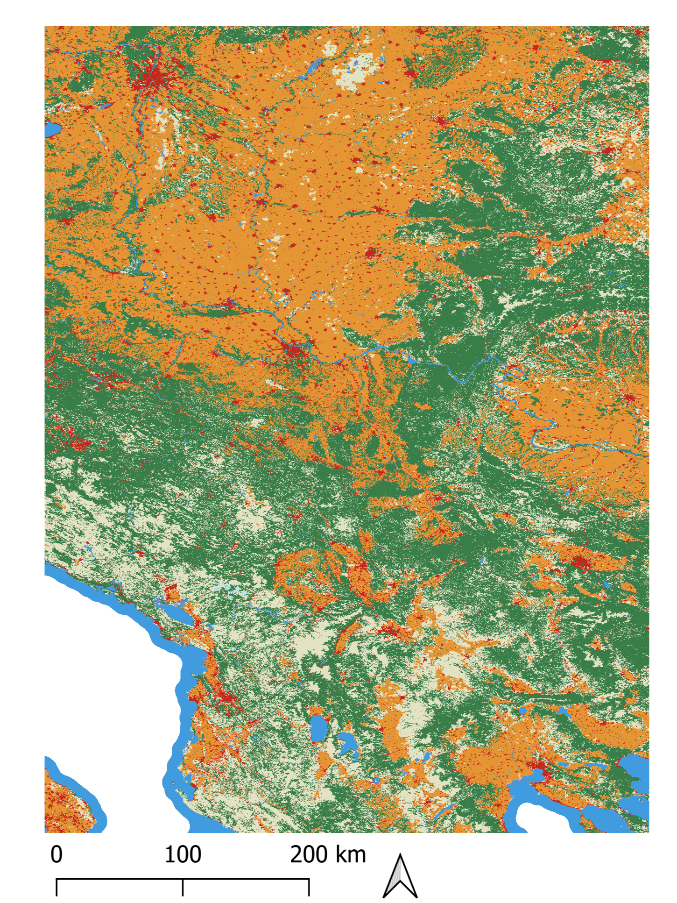
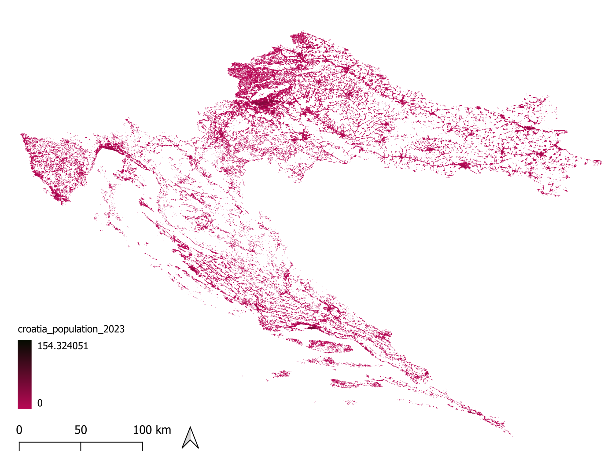
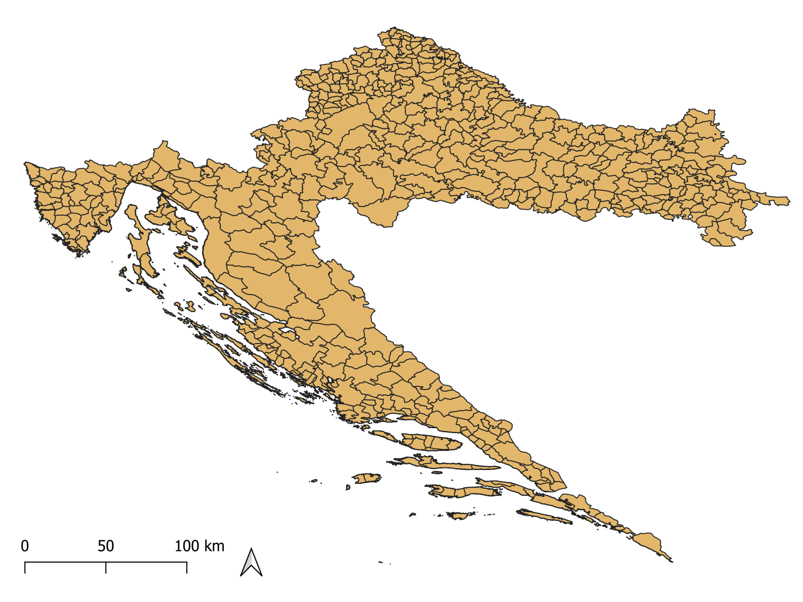

Our Methodology
This project follows a multi-source geospatial workflow, integrating atmospheric, land cover, and demographic data to investigate how environmental changes relate to air quality and human exposure in Croatia. All data are freely available through open platforms, and processing was carried out using standard GIS techniques in QGIS.
The analysis is structured in four main steps: acquiring and processing air pollution data from CAMS, mapping land cover transitions using the ESRI Annual Land Cover dataset, overlaying population distribution data, and finally combining all layers to identify spatial patterns and exposure hotspots.
Study area
Croatia — national scale with counties breakdown
Time period
Year 2021 – 2023
Pollutants
NO₂, PM2.5 and PM10
-
The core objective of this section is to anlayze the evolution of concentration of NO₂, PM2.5 and PM10, in the years 2021 and 2023. The data used coes from CAMS European Air Quality Reanalysis (Copernicus Atmosphere Monitoring Service), a high-resolution dataset (~10 km) built on an ensemble of eleven air quality assimilation models across Europe. The website provides hourly concentration values for multiple pollutants, with a temporal coverage from 2013 to 2025.
Data Sources
Two types of CAMS data were used: hourly data for December 2023, downloaded as raw NetCDF files directly from the CAMS portal using validated reanalysis and ensemble median values; and monthly aggregated GeoTIFFs, covering all 12 months of 2021 and the remaining 11 months of 2023 for the three pollutants, provided by the course professors.
Fig. 1 — CAMS Monthly mean concentration of PM2.5 for the month 04 - 2021.
Processing Steps
- Aggregating hourly data for December 2023 — The hourly data was temporally averaged across the full month to produce a single monthly mean raster per pollutant, then exported as GeoTIFF.
- Clipping to the area of interest — All monthly layers were clipped to the Croatian national boundary. A pixel misalignment was detected between the December 2023 raster and the other provided layers and resolved by realigning all rasters onto a common grid before clipping.
- Yearly aggregation and concentration classification — The 12 monthly rasters for each year were averaged to produce annual mean maps for 2021 and 2023, then reclassified into five concentration classes following EU air quality limit values.
- Spatiotemporal trend analysis (2021–2023) — A difference map was computed for each pollutant (2023 − 2021) to visualise how concentrations evolved over the period, highlighting areas of improvement and zones where pollution increased.
-
To analyze how changes in land cover between 2021 and 2023 correlate with air pollutant concentrations across Croatia, multi-temporal land cover data from the ESRI 10m Annual Land Cover dataset (ArcGIS Living Atlas of the World) was combined with the CAMS Reanalysis pollutant data processed in the previous step. The following paragraph describes the processing pipeline used in QGIS to prepare the data, detect land cover transitions and spatially correlate them with changes in pollutant concentration.


Fig. 2 — The 2 land cover tiles downloaded from the ESRI Living Atlas, covering the Croatian territory.
Processing Steps
- Download and load the GeoTIFF tiles — The ESRI 10m Annual Land Cover tiles covering Croatia were downloaded for both 2021 and 2023. All tiles overlapping the area of interest were selected and loaded into QGIS. In case of Croatia 2 tiles were selected and reprojected to WGS84 (EPSG:4326).
- Merging tiles into a single national layer — Since Croatia spans multiple tiles, the reprojected rasters were merged into one national layer for each year. To reduce computational load, the rasters were previosly clipped to the Croatian boundary.
-
Land cover change detection —
A transition raster was computed as
("LC_2021" * 100) + "LC_2023", assigning each pixel a unique code combining the 2021 and 2023 classes, explaining what land cover type it was originally and what it became. - Resampling the CAMS pollutant raster — The CAMS Annual Mean Aggregation Change raster (~1 km/pixel) was resampled to match the ESRI land cover resolution (~10 m/pixel).
- Binary change mask — In order to spatially correllate the pollutant concentrations with land cover changes, a binary mask was generated from the transition raster, classifying each pixel as Stable, Gain or Loss for the Crops class.
- Studying pollution patterns — The mask was vectorized (Raster → Conversion → Polygonize), dissolved by zone, and used to compute meaningful statistics.
-
The last step of the workflow focuses on assessing population exposure to air pollution across Croatia. The goal was to produce a bivariate map showing the spatial relationship between population density and pollution levels across Croatian administrative zones.
Data Sources
Two types of data were used in this step:- Croatia population data from WorldPop for the year 2023 at a 100m resolution (downloaded as a GeoTIFF)
- Administrative provincial boundaries from the FAO GAUL Level 2 dataset (downloaded as a GeoPackage)


Fig. 3 — Distribution of Croatia population in 2023 from WorldPop. Fig. 4 — Croatia administrative boundaries (GAUL Level 2).
Processing Steps
- Preprocessing: reset NoData values — Before reclassification, internal NoData pixels (value −99999) were reset to 0 using and then the raster was re-clipped to the Croatian boundary to restore the NoData value outside the area of interest.
- Population classes — To classify the population into 5 classes, quantile boundaries were computed. Value 0 was treated as a separate class (class 1), so 4 additional quantile boundaries were needed. Then the population raster was reclassified into 5 classes using the quantile boundries, via Processing Toolbox → Raster analysis → Reclassify by table. Class 1 represents unpopulated or near-zero pixels, and class 5 the highest population density areas.
- Download administrative boundaries (GAUL Level 2) — The FAO GAUL Level 2 administrative boundaries for Croatia (county level) were downloaded and extracted from the full dataset and saved as a GeoPackage.
- Zonal statistics per administrative zone — Using Processing Toolbox → Zonal Statistics, two rounds of statistics were computed on the GAUL L2 layer: first, the median of the population quantile raster; then, using the output of the first run as input, the maximum of each pollutant concentration class raster.
-
Compute bivariate classes —
To visualize the relationship between population density and pollution levels, a bivariate
classification was created by combining the two previous outputs, with the expression
"pollution_class_max" * 10 + "population_class_median". This encodes each zone with a unique two-digit code combining the pollution and population class. Then a predefined QML style was applied to the vector layer to display the bivariate classification. The resulting map highlights zones with simultaneous high pollution and high population density. - Pie chart of population exposure — The bivariate layer was dissolved by pollution class, producing at most 5 features. Zonal statistics (sum) of the unquantized population layer were then recomputed on this dissolved layer. The resulting values per pollution class were visualized as a pie chart using DataPlotly, showing the percentage of the Croatian population exposed to each pollution concentration level.